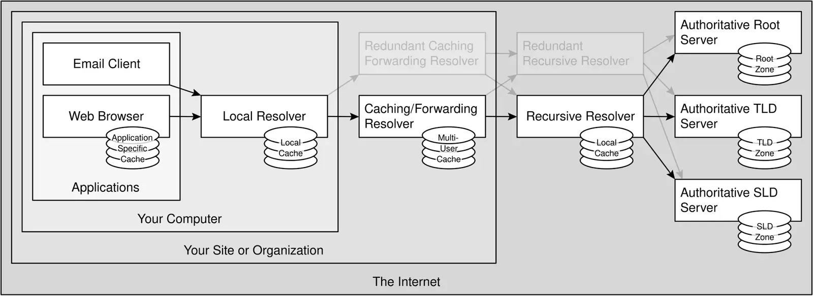
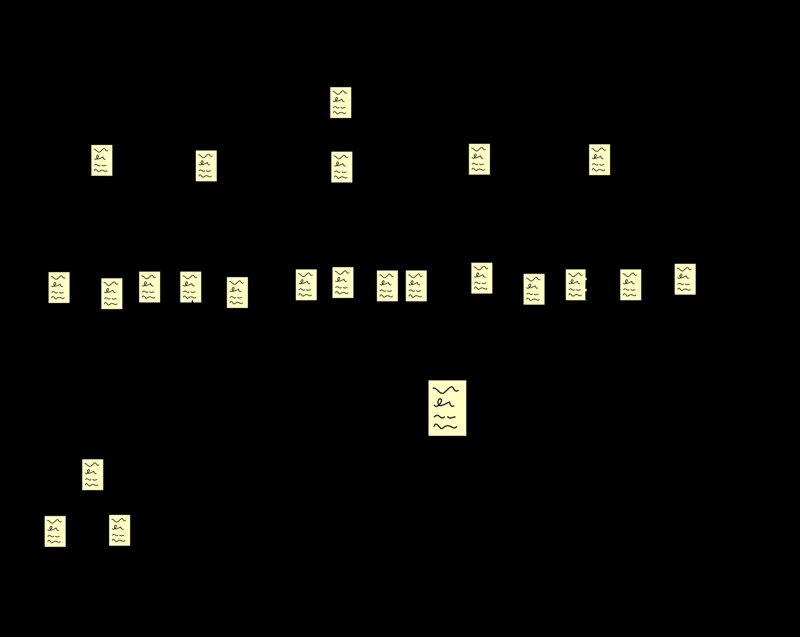

短答
DNS 把 URL 里的主机名解析成客户端可以连接的地址。如果规范主机无法解析，就没有获取，也没有文档。在争论标题之前先修好这个名字。

定义
主机名是 URL 的一部分。如果 www 和根域主机都有响应，它们应约定哪一个是规范主机，通常是重定向到你发布的那一个。只在私有网络里解析的主机名不是公开文档。国际化域名必须作为你真正宣传的 URL 能用。SEO 健康包括线上 URL 能否被获取。它不给注册商打分。
页面上怎么出现
解析规范 URL 上的主机并获取它。如果两个主机返回相同的 HTML 却没有规范约定，就选定一个并重定向另一个。检查更换域名服务器时没有丢掉你印在 hreflang 和站点地图里的那台主机的记录。
要检查什么
- 用公共解析器解析规范主机名。
- 获取该主机并读文档。
- 把 www 和根域收成一个主机。
- 让站点地图和 hreflang 使用能够解析的主机。
一个结构示例
DNS 切换之后，站点地图里的主机不再解析，页面改由一个临时主机提供。修复是恢复已发布的主机名，把临时主机 301 到它，并重新获取规范 URL。不编造任何可用时间百分比。

它不声称什么
DNS 能用，不保证排名或 AI 引用。Mika 不出售可用时间或位置。
Mika Visibility 把它归到哪里
如果名字无法解析，后面的页面检查就不会开始。 Mika Visibility 把这项检查放在 SEO 健康轨道上，和可抓取性、状态码、页面基础放在一起。SEO 增长仍是另一个问题：哪些覆盖还没有写出来。GEO 仍是另一个问题：认真的读者能否在页面上找到可支撑的回答。没有混合总分。
常见问题
抓取程序在获取你的 URL 之前必须发生什么？
DNS 把 URL 里的主机名解析成客户端可以连接的地址。如果规范主机无法解析，就没有获取，也没有文档。在争论标题之前先修好这个名字。
提供同一网站的两个主机名应当怎样处理？
主机名是 URL 的一部分。如果 www 和根域主机都有响应，它们应约定哪一个是规范主机，通常是重定向到你发布的那一个。只在私有网络里解析的主机名不是公开文档。国际化域名必须作为你真正宣传的 URL 能用。SEO 健康包括线上 URL 能否被获取。它不给注册商打分。
DNS 正常能保证排名吗？
DNS 能用，不保证排名或 AI 引用。Mika 不出售可用时间或位置。
下一步
做一次结构化的 SEO 与 GEO 审计，看健康发现、增长缺口，以及可以执行的蓝图。
更清楚的实体、回答、证据和上下文，让页面更容易被理解和转述。任何回答产品中的结果都不保证。